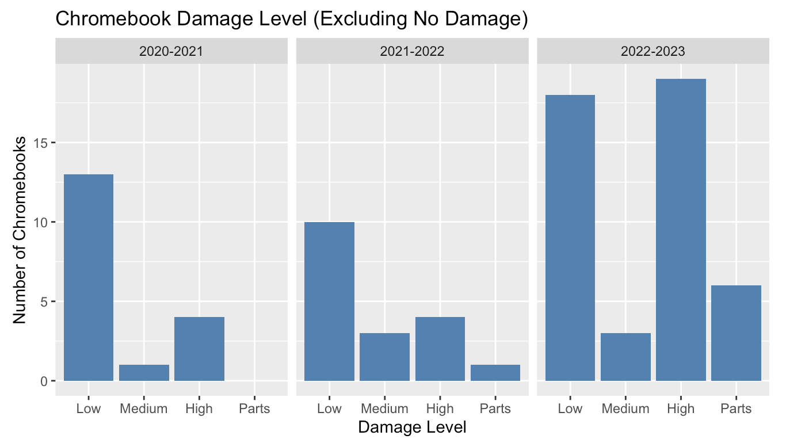

During my role at Markesan Districts Schools, I used my experience with Chromebooks to create a data model to effectively reduce district technology waste and optimize student resources. I gathered data across three school years with various methods of Chromebook distribution and compared variables such as damage level and computer age to draw conclusions based on analytical models. This interpretation created with RStudio and Microsoft Excel allowed for resources to be efficiently allocated throughout the district. I would be able to use the skills from this and other projects to work towards enhancing data models at Blackcurrant Incorporated.
Here is an example of a graph used for data modeling in this project:
